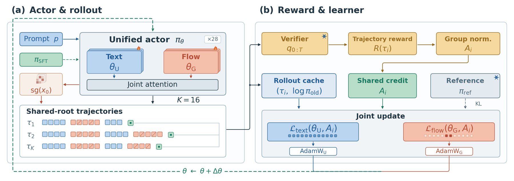

UMM-Reflection
Learning native reflection in unified models with interleaved reinforcement learning


UMM-Reflection in three minutes
Abstract
Unified multimodal models can both look at and render images, so in principle they can repair their own generations: diagnose what an image gets wrong, revise it, observe the result, and diagnose again. Whether a revision helps is known only after it is rendered, so the reflection text and the image generation must be learned jointly, over the whole loop. Supervised fine-tuning (SFT) on reflection trajectories gives a cold start but does not find the high-success repair paths, and naive RL that optimizes only the renderer or only one head leaves most of the gain untapped.
We introduce UMM-Reflection, which applies reinforcement learning (RL) to complete reflection trajectories inside one unified model: sibling trajectories share one initial image, so the group-relative advantage compares reflection strategies, and one trajectory-level advantage updates both the reflection tokens and the flow-based revisions, avoiding the combinatorial blow-up of per-round credit assignment. Unlike single-round editing or pipelines with an external critic, credit flows across rounds and to both roles of the same model, and no verifier is needed at inference. On BAGEL, UMM-Reflection improves GenEval by 12.05 points over SFT, and the gains transfer to WISE (+10.97), OneIG-Bench (+3.48), and T2I-CompBench++ (+4.63), none of which is used in training.
Reflection is only useful when it changes the image
Writing a plausible critique is easy. Turning that critique into a better image is the hard part. We compare three ways to give BAGEL a second look at its own output on the 553 official GenEval prompts, each with up to three edits.
BAGEL + GPT-5.5 critic
A frontier model reads each image and writes the edit instruction. BAGEL performs the edit.
- GenEval, final
- 0.79
- Wrong images repaired
- 27.6%
The critic declared 67 of the 163 wrong first images finished at round 0.
BAGEL-SFT reflection
The model is fine-tuned on interleaved reflection trajectories and reflects on its own.
- GenEval, final
- 0.72
- Wrong images repaired
- 20.6%
It writes reflections in the right format, but the edits rarely fix what was wrong.
UMM-Reflection
Same model and protocol, trained with whole-trajectory RL on the images its reflections produce.
- GenEval, final
- 0.84
- Wrong images repaired
- 64.9%
Reflection and generation are trained together, so a diagnosis is rewarded only when the edit it leads to is better.

- The gain is in the revisionsFirst-round accuracy is 70–73 for base, SFT and RL models alike. With three reflection rounds, UMM-Reflection reaches 84, while base and SFT stay at 73 and 72.
- It fixes what resampling cannotOn the 62 prompts where four independent BAGEL samples all fail, reflection after RL repairs 60% of wrong first images. SFT repairs 12%.
- It transfersRL sees only GenEval-style prompts. The same checkpoint improves WISE by 0.19, T2I-CompBench++ by 0.06 and OneIG-Bench by 0.02 over the base model.
Step through real trajectories
Each case is one unedited run of UMM-Reflection with a budget of three edits. Pick a round to see the image and the text the model wrote about it. The text is the model's own output in its interleaved format.

More rounds help only after RL
GenEval accuracy by reflection budget
Official 553 prompts and detector, 512 px. R0 is the first image; +k allows k edits.
Repair rate during RL training
Share of wrong first images that are correct after three edits, per checkpoint.
| Model | GenEval | WISE | OneIG | CompBench |
|---|---|---|---|---|
| BAGEL-Base | 0.71 | 0.55 | 0.80 | 0.49 |
| BAGEL-SFT | 0.72+0.00 | 0.63+0.08 | 0.79−0.01 | 0.50+0.01 |
| BAGEL-Self-Agentic | 0.77+0.05 | 0.61+0.06 | 0.81+0.00 | 0.52+0.03 |
| BAGEL-T2I-RL (1k updates) | 0.76+0.04 | 0.54−0.01 | 0.80−0.01 | 0.49+0.00 |
| UMM-Reflection | 0.84+0.12 | 0.74+0.19 | 0.83+0.02 | 0.55+0.06 |
All rows use the same prompts, resolution and scorer. Differences are relative to BAGEL-Base. T2I-RL applies the same RL budget to single-shot generation, with no reflection.
One model, one trajectory, one reward

Learn the protocol
SFT on interleaved trajectories teaches the model to inspect an image, write a diagnosis and an edit instruction, and generate the revised image in a single context.
Reward the whole sequence
RL scores complete repair sequences by visual progress and final quality. The reflection text and the edited image share the credit, so neither is trained in isolation.
No verifier needed
At test time the model reflects on its own output. The verifier is used only to compute training rewards.
BibTeX
@article{ummreflection2026,
title = {Learning Native Reflection in Unified Models
with Interleaved Reinforcement Learning},
author = {Authors to be announced},
journal = {arXiv preprint},
year = {2026}
}